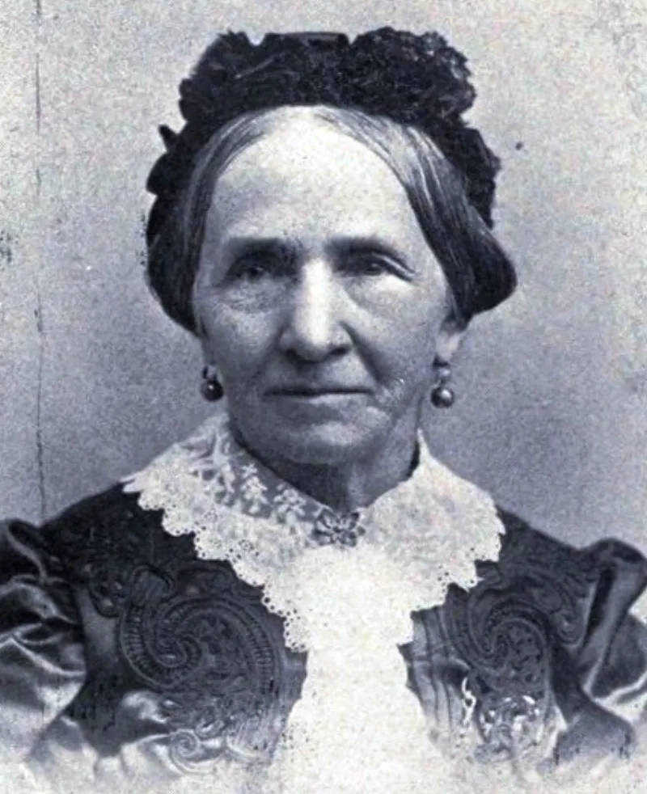
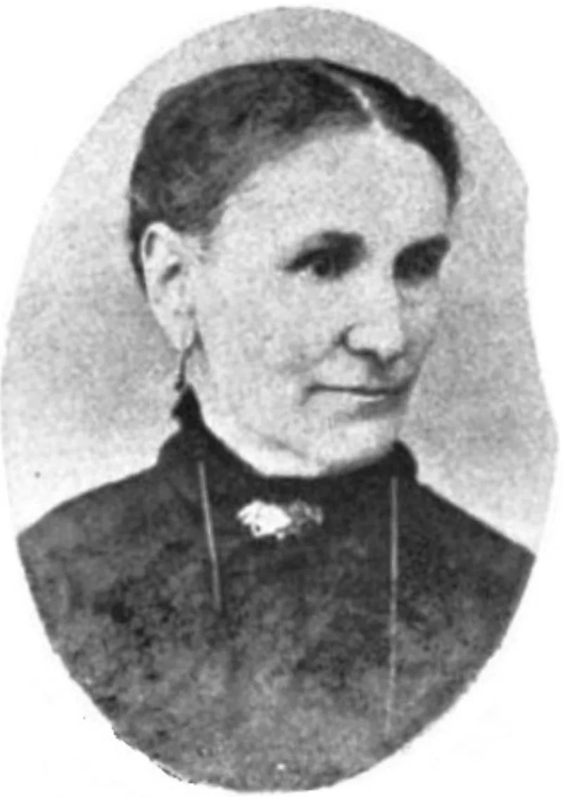

An angel with a drawn sword, used in proposals
AdmittedTheir own church publications admit these facts. You can make this point from LDS sources alone.
What the church's essay concedes
The essay Plural Marriage in Kirtland and Nauvoo states that Joseph Smith told women an angel appeared three times commanding polygamy. On the last visit "the angel came with a drawn sword, threatening Joseph with destruction unless he went forward."
How that was used
In proposals. To Zina Diantha Huntington, while she was courting Henry Jacobs.
She was sealed to Joseph after being told of the angel, and Henry later stood as a witness. To Mary Elizabeth Rollins Lightner, who was already married.
And to Lucy Walker, who was 16 and living in his home after her mother died. She was told to seek her own confirmation.
She later wrote about her anguish.
What Helen Mar Kimball recorded
She was 14. She wrote down what Joseph promised her: "If you will take this step, it will ensure your eternal salvation and exaltation, and that of your father's household." That is her own memoir, written as a faithful member of the church.
Their answer, at full strength
Brian Hales and FAIR say the angel accounts come from faithful participants, and that they show reluctance rather than appetite. He delayed for years, and moved only under compulsion from God.
Helen's sealing was likely unconsummated and dynastic, linking families for the next life. Women did refuse — Sarah Pratt and Cordelia Morley both did, with no spiritual penalty.
And marriage customs for young women in the 1840s were not ours.
How strong is this argument?
They admit the facts. Look at what the answer itself says.
An angel threatened him into it. So a proposal carried a promise from God and a threat from God at the same time.
D&C 132:54 and 64 put the threat into scripture. Galatians 1:8 speaks to exactly this, and 2 Corinthians 11:14 warns that Satan appears as an angel of light.
What to say
"Helen was fourteen. What do you make of what she was promised?"



How they answer this — at its strongest
Hales says the story shows he held back. Women did refuse, and paid no price.
Brian Hales and FAIR argue that the angel accounts come from faithful participants, and that they show Joseph's reluctance. He delayed for years and acted only under divine compulsion. That is the opposite of a predator's eagerness.
They note that Helen Mar Kimball's sealing was likely unconsummated and dynastic. It linked families for the next life only.
They note that women such as Sarah Pratt and Cordelia Morley refused Joseph with no spiritual penalty. That shows real agency.
And they argue that marriage customs for young women in the mid-1800s were sharply different from ours. Modern categories of coercion do not map cleanly onto them.
The verdict
They admit the facts: the answer itself is that an angel threatened him into it.
The essential facts are conceded in the church's own essay. The drawn-sword angel. Helen's marriage 'several months before her 15th birthday'. The sealings to already-married women. The salvation promise to Helen comes from her own faithful memoir.
The threats in D&C 132:54 and 64 are canon.
Their reframing disputes what it meant, not what happened. And 'an angel threatened him into it' is itself the admission. The proposals carried a promise from God and a threat from God at once.
Galatians 1:8 speaks to exactly the case of an angel authorising another gospel. 2 Corinthians 11:14 warns that Satan appears as an angel of light. The severity is high because this goes to character, and to the fruit test of Matthew 7:15-20.
Sources
- Gospel Topics essay: Plural Marriage in Kirtland and Nauvoo
- Brian Hales: The Accounts of the Angel with a Drawn Sword
- FAIR: Helen Mar Kimball — circumstances of her plural marriage
- Christian Research Institute: Plural Marriage and Joseph Smith